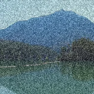

Statis

Noise abu-abu berkelip, seperti televisi tanpa sinyal.
Pengaturan
| Pengaturan | Jenis | Rentang | Default |
|---|---|---|---|
| Jumlah | Angka | 0 hingga 1 | 0.4 |
| Ukuran | Angka | 0.5 hingga 50 | 2 |

Noise abu-abu berkelip, seperti televisi tanpa sinyal.
| Pengaturan | Jenis | Rentang | Default |
|---|---|---|---|
| Jumlah | Angka | 0 hingga 1 | 0.4 |
| Ukuran | Angka | 0.5 hingga 50 | 2 |